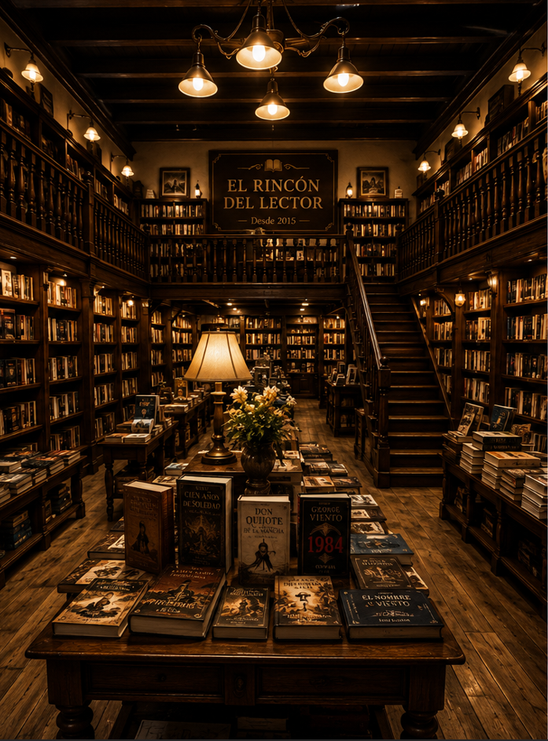
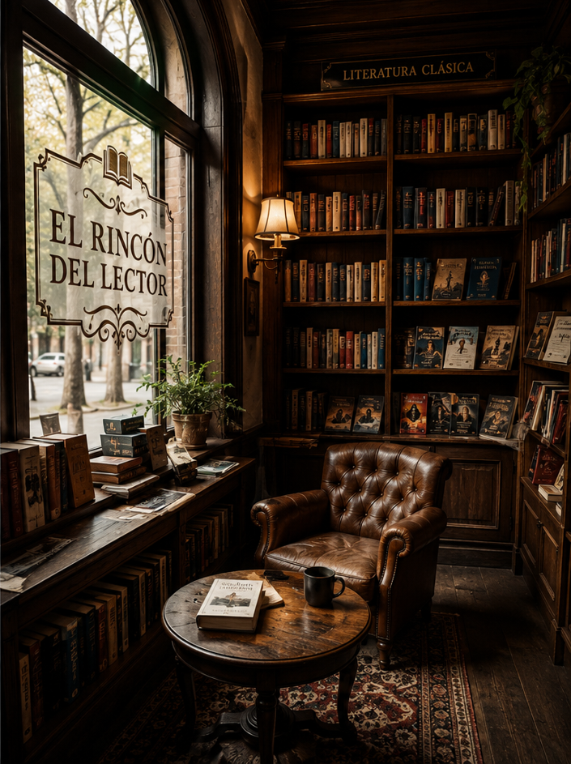

Nuestra historia
El Rincón del Lector nació en 2015, cuando un grupo de amigos apasionados por la lectura imaginó un lugar donde los libros, las historias y el conocimiento pudieran reunirse en un ambiente cálido y acogedor. El sueño era crear un espacio donde los amantes de la lectura pudieran encontrar inspiracion, conocimiento y entretenimiento. Lo que comenzo como una pequeña libreria de barrio con unos pocos estantes de madera, fue creciendo gracias al apoyo de nuestros clientes y a la pasion por los libros.
Hoy contamos con una amplia seleccion de novelas, literatura clasica, libros infantiles, textos educativos y obras de desarrollo personal. Nuestro objetivo es seguir fomentando el habito de la lectura y acercar grandes historias a peronsas de todas las edades.
Nuestra mision
Nuestra mision es promover la lectura y el acceso al conocimiento, ofreciendo una amplia variedad de libros en un ambiente calido, acogedor, y accesible para toda la comunidad.
Vision
Aspiramos a convertirnos en una libreria de referencia para los lectores, reconocida por la calidad de nuestro trabajo, la atencion personalizada y nuestro compromiso con la lectura y la educacion.
Nuestro local
Nuestro espacio esta diseñado para que cada visita sea una experiencia special. Nuestras estanterias de madera, la iluminacion calida y los comodos rincones de lectura crean un ambiente ideal para descubrir nuevas historias y disfrutar del placer de los libros.


Nuestra filosofía
"Creemos que cada libro tiene una historia, y cada lector una aventura por descubrir."